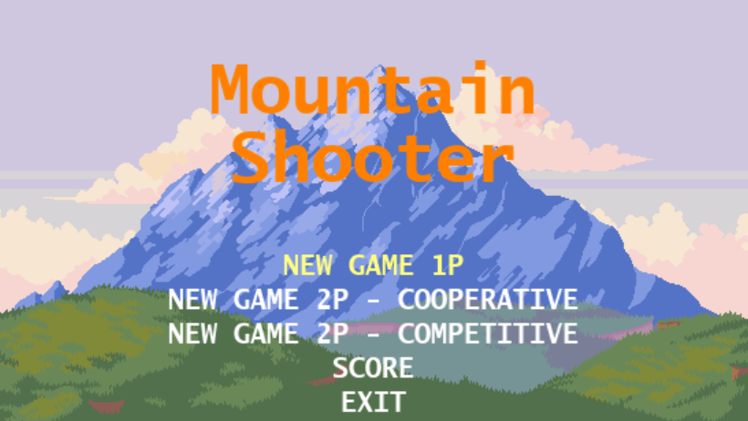
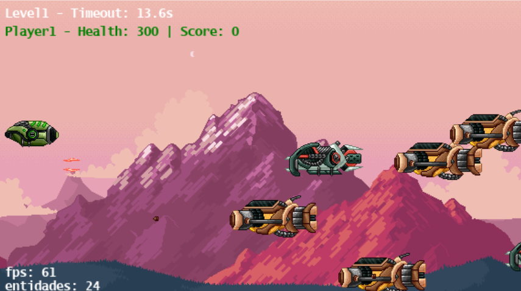

Jogo Mountair Shooter
Criado em Agosto de 2024 
Projeto: Mountain Shooter - Desenvolvimento e Desafios Durante a disciplina de Lógica e Programação, desenvolvi o jogo Mountain Shooter, que foi uma das oportunidades práticas de aplicar os conceitos de programação e lógica computacional. O jogo é baseado em um cenário montanhoso, onde o jogador assume o papel de um atirador e deve enfrentar desafios para matar seus inimigos e armazenar pontos. O desenvolvimento do Mountain Shooter envolveu a criação de uma lógica de jogo sólida, com controle de movimento, atirar e pontuação. Utilizei a linguagem de programação Python e a biblioteca Pygame para construção do jogo que possui 3 níveis. O maior desafio foi garantir que a jogabilidade fosse fluida, com a movimentação e os tiros respondendo rapidamente aos comandos do jogador. Além disso, tive que trabalhar na criação de níveis progressivos, onde a dificuldade aumentava conforme o jogador avançava, o que exigiu um bom planejamento de como as variáveis de tempo e movimento interagiam no jogo. Esse projeto não apenas me ajudou conhecer a lógica de programação, mas também me ensinou a importância de testar e ajustar constantemente o código para garantir uma boa experiência para o usuário. O Mountain Shooter é um exemplo de como a lógica e a programação se combinam para criar uma experiência interativa e divertida.